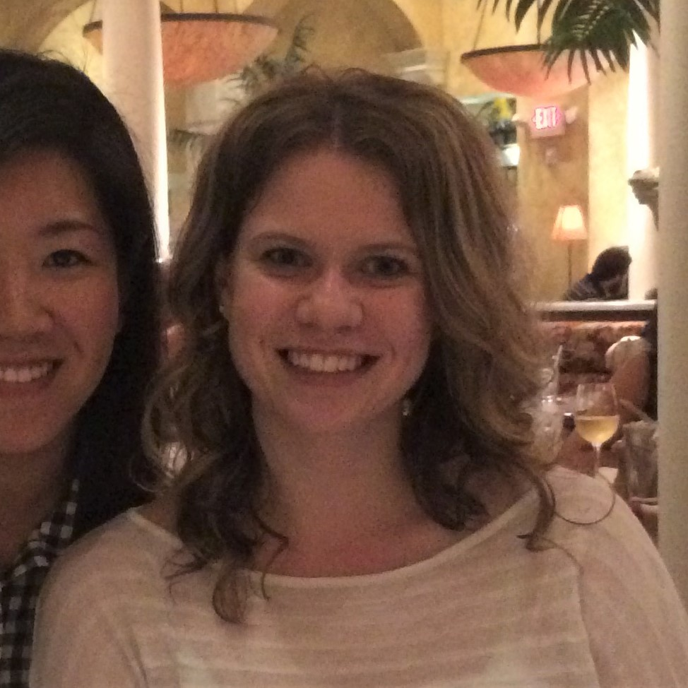

My name is Kendall Davis. I was born in Raleigh, North Carolina and have lived here for all of my 29 years. I went to NC State University, and graduated with an accounting degree in December 2011. Immediately after graduating, I completed my CPA exams, received my CPA license, and got to work as an accountant at Credit Suisse. I have worked at Credit Suisse for the past six and a half years, and thus far all of my roles have been within the Finance division. Working in Finance has been a great learning experience, and I've been lucky to be able to work in several roles and develop a wide understanding of all the businesses the bank is involved in. I've found I really enjoy managing people, and being involved in team strategizing. In 2016 I was nominated to join a new "Innovation" group, and ended up taking the lead role. The original intent of the group was to crowdsource ideas across all of the different Finance function, and come up with wide-reaching solutions for common problems within the deparment. Our objective was to find problems that could be solved by emerging technologies being used within Finance (programming, robotics, NLP, machine learning). Leading this gorup has been a huge learning experience as I have no technical background. Ultimately it's what started me on my road towards
taking this class. I quickly found that most individuals within the group didn't know how to propose solutions requiring new technologies because they didn't understand the new technologies. To address this, I taught myself the R programming language, built an introductory training course, and trained all of the group members. In the time since I've been thrilled to see several group members code their own programming solutions, and many more have requested additional R trainings. I never thought I was the kind of person who could pick up coding, let alone the kind of person who trains others! Because I enjoyed learning the R coding language so much, I began to seriously consider developing additional coding skills. That's why this particular class caught my attention. I first heard about this coding class after returning from a work conference in New York where I'd given a demo of one of my R tools. That trip sent my enthusiasm for the roof, and it seemed like perfect timing when I found out about this opportunity. Now that I'm here, I'm very excited to develop a strong foundation of full stack web coding. I'm already imagining all the things I'd be able to do within my role at work with these skills, and am very excited about using this course to take my career to a new level.